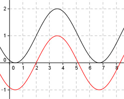

Aufgabe 248 Bestimmen Sie c und d für den dargestellten Graphen der Form y = a * sin (b * (x + c)) + d.  An der Stelle y = 1 abgelesen: Periode = 2п (von 2 bis 8,28) --> 2n |b| = ---- = 1 2n Keine Spiegelung an der x-Achse --> b = 1 asin(x + c) + d Abgelesen: |a| = 1 --> Keine Spiegelung an der x-Achse -->a = 1 sin(x + c) + d Abgelesen: Verschiebung entlang y = 1 um 2 nach rechts --> c = -2 sin(x + 2) + d Abgelesen: Verschiebung entlang der y-Achse um 1 --> d = 1 --> y = sin(x - 2) + 1 Zum Vergleich: sin(x - 2)